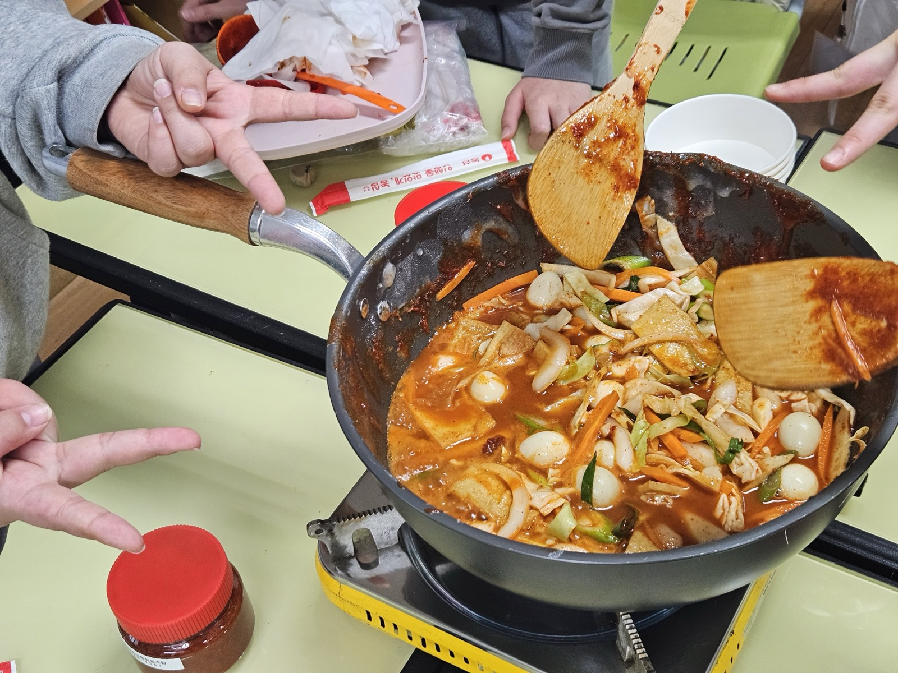

과정 구성
4단계로 완성하는 체험지도사 과정
12주 과정을 네 단계로 밟아가며 장류부터 식초류, 현장 실습까지 완성합니다.
1단계
발효 입문 · 장류 기초 (1~3주)
오리엔테이션과 발효식품의 이해, 전통 된장·막장 만들기로 장류의 기본을 익힙니다.
2단계
장류 심화 · 발효청 (4~6주)
청국장·고추장을 담그고 발효청·효소 만들기까지 장류를 심화합니다.
3단계
식초류 · 정선 현장 실습 (7~9주)
와인·식초를 빚고, 정선 만장대에서 1박 2일 현장 실습(메주 만들기 · 1급 자격증 시험)을 진행합니다.
4단계
전통주 · 간장 · 수료 (10~12주)
전통주와 전통 한식 간장을 만들고 수료식으로 과정을 마무리합니다.
원데이 수업 안내
전 과정 등록이 부담스러우시다면 관심 있는 주제만 골라 듣는 원데이 수업도 가능합니다. 일정은 문의해 주세요.
수업 구분
장류반
- 된장
- 간장
- 막장
- 청국장
- 고추장
식초류반
- 청 만들기
- 와인
- 식초
- 전통주 (막걸리)
